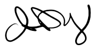

2025
Graduating UX-designer
Linnéuniversitetet
Information about my education and earlier experiences.
Hello!
My name is Anna Dahlberg and I plan to graduate as UX-designer at Linneuniversitetet in spring 2025.
I have been working as a chef for several years but I have always had a little thougt of doing something else, and when my childern became teenagers I decided to change direction of my carrier into IT. The chioce of UX was pretty easy. I noticed when something are distubing the flow on webpages or mobile apps and I thougt of how it could be better and came up with other ways to make it more user friendly, not only for me but for people in my surroundings. Designing have been an interest since my childhood and I have always considered myself as a creative person. Baking, drawing, scrapbooking and sewing are a few of my interests that I have had in periods. Right now, painting with aquarelle is the main interest when I got the time.
The step between working as a chef and UX is not as great as it may seem. Both proffessions are very creative and focus on make a product to the individual customers needs and preferences. If I made a bad product that the customer are not appreciate I need to look into what he or she think is the problem and find out how I can make it better for the customer henceforth. I believe the key to make a better product is how to communicate with the users and have an honest interest to make life better for others.
I look forward to gaining new experiences from the UX field and develop to be as good as possible!
Best regards!
Graduating UX-designer
Linnéuniversitetet
Schoolchef
Karlstad kommun
Politices candidate program
Karlstads universitet